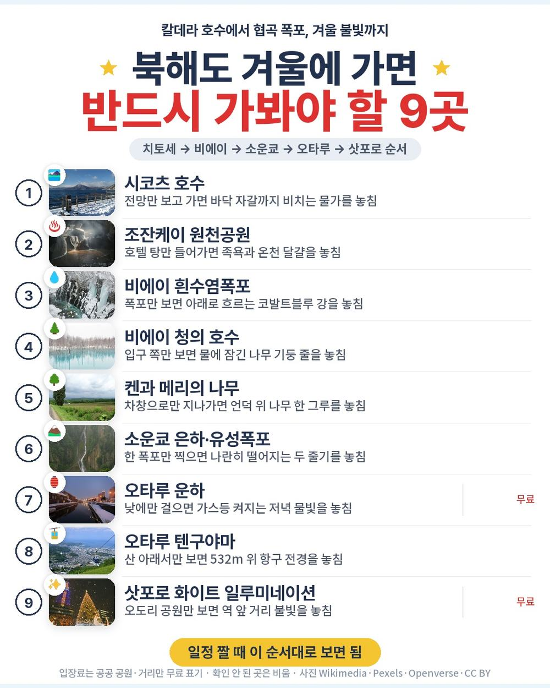
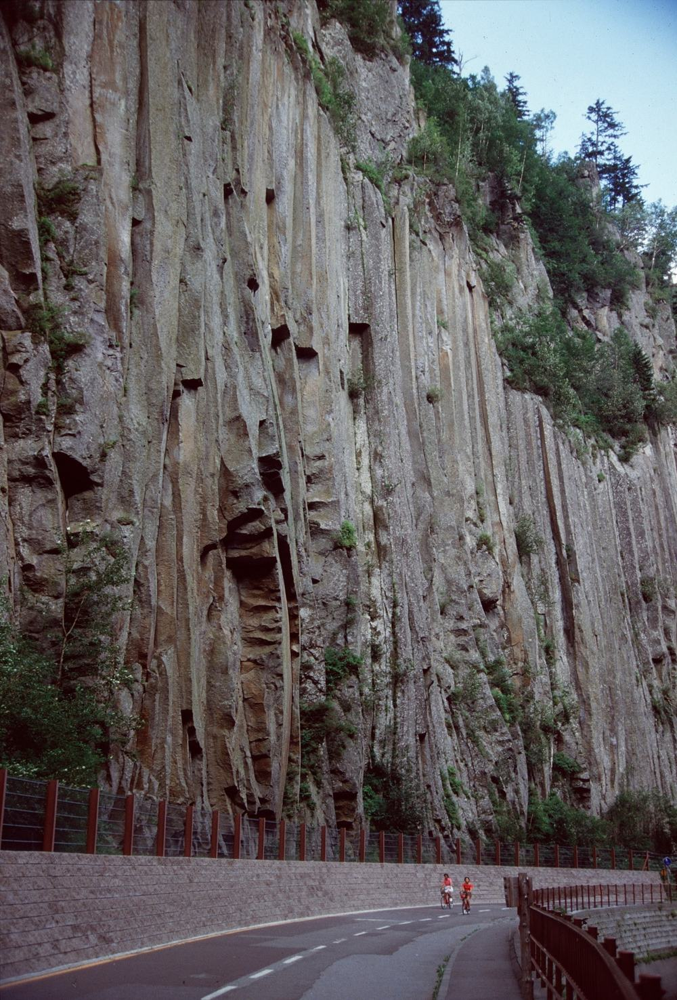
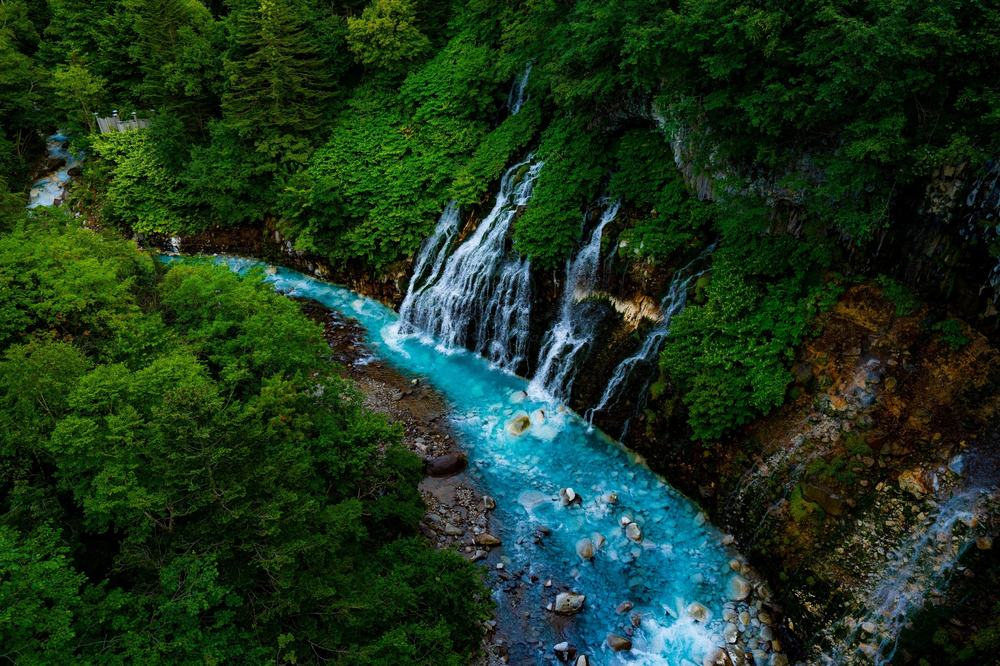

북해도 패키지여행 노랑풍선 패키지 여행 109만 9천원, 온천 호텔 두 밤에 대게·샤브샤브 무제한 저녁까지 든 3박 4일
조잔케이와 소운쿄, 계곡 온천 마을 두 곳에서 하룻밤씩 자고 셋째 날 저녁엔 대게와 샤브샤브를 술까지 무제한으로 먹는 일정. 가이드·기사 경비 4,000엔이 상품가 안에 들어 있어 현지에서 따로 걷는 돈이 없다는 점이 이 상품의 특징.
직접 다녀온 후기가 아니라, 노랑풍선 일정표와 포함·불포함 원문을 하나씩 따져 본 글임.
결론 — 추천. 시코츠 호수·비에이·소운쿄·오타루·삿포로를 나흘에 돌고, 온천 호텔 2박과 식사 9회, 텐구야마 로프웨이까지 값 안에 있음. 다만 버스를 하루 4시간 넘게 타는 게 힘드신 분은 맞지 않음.
오늘 기준 출발일별 요금 보기
https://naver.me/x0OxKIjU

| 항목 | 내용 |
|---|---|
| 가격 | 1인 1,099,000원 (성인 · 12월 출발 기준) · 2인 2,198,000원 |
| 여행사 | 노랑풍선 |
| 항공 | 이스타항공 직항 · 인천 09:10 → 신치토세 11:40 / 신치토세 13:00 → 인천 16:00 |
| 숙소 | 온천 호텔 2박(조잔케이 시카노유 · 소운쿄 소운카쿠 그랜드 예정, 양실·화실 랜덤) + 삿포로 뷰 호텔 1박 · 각 동급 변경 가능 |
| 일정 | 3박 4일 · 버스 · 한국어 가이드 · 식사 9회 · 쇼핑 1회 · 선택관광 0개 · 최소 15명 |
▶ 내 출발일 오늘 기준 요금 확인 (제휴 링크 · 예약 시 수수료를 받으며 가격은 같습니다)
▶ 10월 23일 기준 북해도 패키지 최저 88만 6,600원부터 — 출발일별 값 한 화면에: 비교 페이지
| 번호 | 내용 | 한 줄 답 |
|---|---|---|
| 1 | 이 값에 들어 있는 것 | 온천 2박·경비까지 |
| 2 | 현장에서 더 낼 돈 | 경비 0원 |
| 3 | 일정과 체력 | 버스 약 11.5시간 |
| 4 | 자유여행으로 짜면 | 1인 약 98만원 |
| 5 | 맞는 분 · 안 맞는 분 | 온천·대게 원하는 분 |
1. 이 값에 들어 있는 것

109만 9천원 안에 든 걸 세어 보면 이렇다.
- 이스타항공 인천–신치토세 직항 왕복, 유류할증료·세금 포함
- 온천 호텔 2박과 삿포로 시내 호텔 1박, 온천 호텔 두 곳은 저녁이 호텔 뷔페
- 식사 9회 — 셋째 날 저녁은 대게+샤브샤브에 술·음료 무제한
- 가이드·기사 경비 1인 4,000엔, 여행자보험
관광은 첫날 점심 뒤부터 넷째 날 오전까지 이어짐.
- 시코츠 호수 · 조잔케이 원천공원(족욕탕, 자유 산책)
- 비에이 흰수염폭포 · 청의 호수 · 패치워크의 길 · 탁신관 · 소운쿄 은하폭포와 유성폭포
- 오타루 오르골당 · 기타이치가라스관 · 운하 · 텐구야마 로프웨이 탑승
- 삿포로 오도리 공원 · 시로이 코이비토 파크(무료 구역·외관) · 홋카이도청 구 본청사(외관·무료 구역)
선택관광은 0개. 쇼핑은 마지막 날 잡화 면세점 한 번, 약 40분. 11월 20일부터 3월 14일까지 열리는 삿포로 화이트 일루미네이션은 셋째 날 밤 가이드가 길을 알려 주고 각자 보러 가는 방식.

호텔은 매일 바뀜. 첫날은 삿포로 남쪽 계곡의 조잔케이 온천, 둘째 날은 다이세쓰산 아래 소운쿄 온천, 셋째 날은 삿포로 오도리 공원 근처 시내 호텔. 온천 호텔 방은 침대방과 다다미방 중 랜덤이라 고를 수 없음. 대욕장은 남녀가 나뉘고 수영복은 입지 않는 곳임.
2. 현장에서 더 낼 돈
| 항목 | 금액 | 비고 |
|---|---|---|
| 가이드·기사 경비 | 0원 | 1인 4,000엔이 상품가에 포함 |
| 선택관광 | 0원 | 선택관광 없음 |
| 4일차 점심 | 각자 | 13:00 출발이라 공항에서 해결 |
| 시로이 코이비토 파크 유료 구역 | 각자 | 일정은 무료 구역·외관까지 |
| 싱글룸 | 300,000원 | 혼자 방을 쓸 때만 · 전 일정 |
| 합계 (2인) | 0원 (반드시 내는 돈) | 상품가 219만 8천원이 곧 총액 |
두 사람이면 상품가 219만 8천원이 거의 그대로 총액. 마지막 날 공항 점심과 개인 기념품 정도만 따로 잡으면 됨.
3. 일정과 체력

| 일차 | 가는 곳 | 버스 | 걷기 | 점심 · 저녁 |
|---|---|---|---|---|
| DAY 1 | 06:40 인천 1터미널 미팅 → 09:10 출발 → 11:40 신치토세 → 시코츠 호수 → 조잔케이 원천공원 → 온천 호텔 | 약 2시간 | 적음 | 현지식 · 호텔 뷔페 |
| DAY 2 | 비에이(흰수염폭포·청의 호수·패치워크의 길·탁신관) → 소운쿄 은하·유성폭포 → 온천 호텔 | 약 4.5시간 | 보통 | 현지식 · 호텔 뷔페 |
| DAY 3 | 오타루(오르골당·기타이치가라스·운하·텐구야마 로프웨이) → 삿포로 오도리 공원·시로이 코이비토 파크 → 일루미네이션 | 약 4시간 | 보통 | 현지식 · 대게+샤브샤브 |
| DAY 4 | 구 본청사 → 면세점 → 13:00 출발 → 16:00 인천 | 약 1시간 | 적음 | 없음 |
버스는 나흘 동안 약 11.5시간. 둘째 날은 조잔케이에서 비에이까지 약 2시간 40분, 다시 소운쿄까지 약 1시간 30분을 달림. 셋째 날도 소운쿄에서 오타루까지 약 3시간. 북해도 섬 가운데를 크게 한 바퀴 도는 동선이라 그럼.
그 대신 걷는 양은 많지 않음. 폭포와 연못은 주차장에서 가깝고, 오래 걷는 곳은 오타루 운하와 오르골당 거리 정도. 겨울에는 눈길이 미끄러우니 밑창이 두꺼운 신발이 좋고, 무릎이 불편하신 분은 가이드에게 미리 말해 두면 동선을 맞추기 편함. 패치워크의 길은 도로와 날씨에 따라 버스 창밖으로 보는 차창 관광으로 바뀔 수 있음.
같은 목적지 다른 여행사 패키지, 쇼핑·선택관광·가이드 경비까지 비교
https://pkg-lab.com/go/?q=%EB%B6%81%ED%95%B4%EB%8F%84+12%EC%9B%94&utm_source=blog&utm_medium=post&utm_campaign=daily
4. 자유여행으로 짜면

| 항목 | 금액 | 근거 |
|---|---|---|
| 인천–신치토세 왕복 항공 | 388,860원 | ICN↔CTS 직항 왕복 1인 38만 8천원 (패키지와 같은 출발일 · 2026-10-23 마이리얼트립 조회) |
| 온천 호텔 2박(석식 포함) + 시내 1박 | 300,000원 | 2인 1실 1인분 (추정) |
| 대게·샤브샤브 무제한 저녁 | 60,000원 | 삿포로 뷔페 1회 (추정) |
| 식사 (점심 3) | 45,000원 | 현지식 기준 (추정) |
| 로프웨이·입장 | 20,000원 | 텐구야마 로프웨이 등 (추정) |
| 공항 이동 · 차량 | 150,000원 | 렌터카 4일·기름값 2인 나눔 (추정) |
| 여행자보험 · 유심 | 15,000원 | 4일 기준 (추정) |
| 가이드 | — | 자유여행은 없음 |
| 합계 | 약 978,860원 |
혼자 짜면 1인 약 98만원. 패키지는 109만 9천원이고 따로 낼 경비가 없으니, 패키지가 12만원쯤 더 듦. 그 차이에 한국어 가이드와 기사, 나흘 내내 움직이는 버스가 들어 있는 셈.
돈보다 큰 차이는 길. 비에이와 소운쿄는 기차역에서 멀고 버스 편도 드문 곳이라, 직접 가려면 차를 몰아야 함. 겨울 북해도 산길은 눈이 쌓이는 날이 많아 눈길 운전이 익숙하지 않으면 부담이 큼. 패키지는 그 길을 기사가 맡음.
5. 맞는 분 · 안 맞는 분
| 맞는 분 | 안 맞는 분 |
|---|---|
| 온천 호텔 두 밤에 대게 저녁까지 원하는 분 | 버스를 하루 4시간 넘게 타기 힘드신 분 |
| 현지에서 경비를 따로 챙기기 싫은 분 | 한 호텔에서 여러 밤 쉬고 싶은 분 |
| 비에이·소운쿄·오타루를 한 번에 보고 싶은 분 | 삿포로 시내 자유시간을 길게 원하는 분 |
자주 묻는 질문
Q. 북해도 패키지 가격은 얼마인가요?
A. 이 상품은 12월 출발 기준 1인 109만 9천원. 성인과 소아가 같은 값이고, 출발일마다 요금이 달라서 날짜별로 봐야 함.
Q. 가이드 경비는 따로 내나요?
A. 안 냄. 가이드·기사 경비 1인 4,000엔이 상품가에 포함돼 있음. 현지에서 쓸 엔화는 개인 경비만 챙기면 됨.
Q. 쇼핑은 몇 번 들르나요?
A. 한 번. 마지막 날 삿포로 잡화 면세점에 약 40분 들름. 선택관광은 없음.
마무리
계곡 온천 두 곳에서 자고, 비에이의 푸른 연못과 오타루 운하, 삿포로의 겨울 불빛까지 나흘에 담은 일정. 버스 타는 시간만 괜찮다면 북해도가 처음인 부모님과 가기 편한 구성임.
출발일마다 값이 달라서, 가시려는 날짜 요금부터 확인해 보면 됨.
오늘 기준 출발일별 요금 보기
https://naver.me/x0OxKIjU
이 글에는 네이버 제휴 링크가 포함되어 있으며, 링크를 통해 예약하시면 일정 수수료를 받습니다. 가격은 동일합니다. 가격과 구성은 2026년 10월 23일 확인 기준이며 출발일에 따라 달라질 수 있습니다.
▶ 이 상품, 영상으로 보기 (유튜브)
▶ 북해도 패키지 오늘 값 나란히 비교
▶ 같은 목적지 다른 여행사 패키지, 쇼핑·선택관광·가이드 경비까지 비교: pkg-lab.com
사진 출처 (저작자 · 라이선스):
Japan Hokkaido, Sounkyo gorge 01 — CC BY 4.0 (Wikimedia Commons) 원본

그 밖의 사진: Pexels
쇼츠·클립 영상과 사진:
支笏ブルーの美しい支笏湖でドローン空撮してみた【4K】 — しろたか (YouTube, CC BY) 원본
Tree of Ken and Mary - Biei - Hokkaido - Japan (48023422047) — CC BY-SA 2.0 (Wikimedia Commons) 원본
.jpg){kind=link}
Ginga Waterfall during rainstorm — CC BY-SA 4.0 (Wikimedia Commons) 원본

【Sapporo White Illumination 《Merry Christmas 2020！ — Baoshin travel👘🧳 (YouTube, CC BY) 원본
Otaru-Tenguyama 20220625 — CC BY-SA 4.0 (Wikimedia Commons) 원본